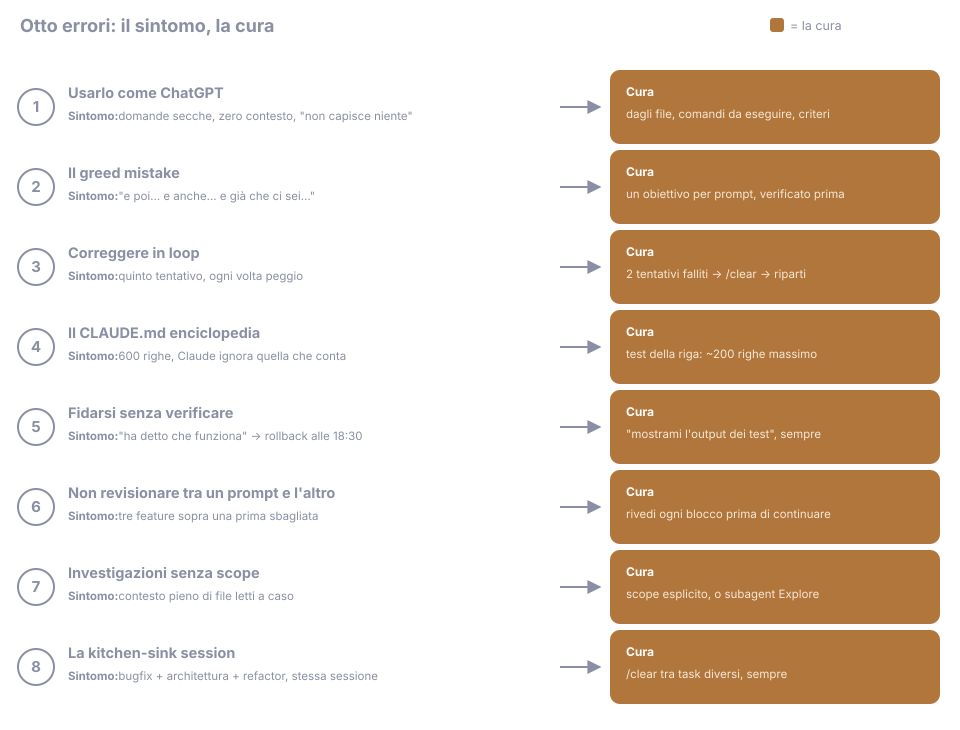

13 - Errori comuni (e come riconoscerli addosso)¶
Fonte: sezione "avoid common failure patterns" delle best practices ufficiali + errori più segnalati dalla community, luglio 2026.
Otto errori, tutti con la stessa struttura: come si presenta (il sintomo), cosa sta succedendo davvero (la meccanica), e la cura. Il valore del capitolo non è la lista in sé: è imparare a riconoscere il sintomo mentre ti capita, non tre ore dopo.

1. Usarlo come ChatGPT¶
Sintomo: domande secche, zero contesto, nessun file riferito, e poi
"non capisce niente".
Cosa succede: stai usando il 10% dello strumento. Claude Code è un agente
col tuo repo davanti: può aprire file, lanciare comandi, verificare i
risultati. Se gli fai solo domande, hai una chat costosa.
Cura: dagli file (@src/components/Modal.tsx), comandi da eseguire
("lancia npm test e guarda cosa fallisce"), criteri di successo. Il
valore sta nel loop agentico (esplora, modifica, verifica), non nella
risposta singola. Confronta: "come si centra un div?" contro "il modal in
@src/components/Modal.tsx non è centrato su mobile: riproducilo, fixalo,
e mostrami lo screenshot". La seconda è una richiesta da Claude Code.
2. Il greed mistake¶
Sintomo: un prompt che contiene "e poi… e anche… e già che ci sei…". Risultato: otto fronti aperti al 60%, nessuno finito, contesto saturo, e non puoi nemmeno fare revert pulito, perché le otto cose sono intrecciate negli stessi file. Cosa succede: ogni obiettivo in più diluisce l'attenzione su tutti gli altri, e nessuno arriva alla soglia del "finito e verificato". Cura: un obiettivo per prompt, verificato prima del successivo (cap. 12). Il momento per accorgersene è mentre scrivi il prompt: alla prima "e già che ci sei", taglia e metti il resto in un appunto per dopo.
3. Correggere in loop¶
Sintomo: "no, non così… no, intendevo… ancora sbagliato…": sei al quinto
tentativo sullo stesso punto e ognuno è peggio del precedente.
Cura: regola dei 2 tentativi. Due correzioni andate male → /clear →
prompt nuovo che incorpora ciò che hai imparato dai fallimenti ("attenzione:
l'approccio con X non funziona perché Y"). La sessione pulita capisce al
primo colpo quello che quella inquinata non capiva al quinto (il perché
meccanico è nel cap. 03).
4. Il CLAUDE.md enciclopedia¶
Sintomo: 600 righe di istruzioni, e Claude che ignora proprio quella importante. Cosa succede: le istruzioni competono tra loro per l'attenzione del modello: ogni riga in più diluisce tutte le altre. Un file gonfio non è "più completo": è un file dove le regole che contano annegano tra quelle che non servono. Cura: test della riga ("questa riga ha mai cambiato un comportamento?") e ~200 righe massimo (cap. 04). Il segnale: quando ti scopri ad aggiungere una riga al CLAUDE.md per un problema successo una volta sola. Aspetta la seconda.
5. Fidarsi senza verificare¶
Sintomo: "ok, ha detto che funziona" → merge → rollback alle 18:30. Cosa succede: hai accettato un'asserzione come se fosse un'evidenza. Il modello che dichiara "funziona" sta esprimendo fiducia nel proprio codice, la stessa fiducia mal riposta di qualunque autore. Cura: mai accettare un'asserzione senza evidenza (cap. 11). "Mostrami l'output dei test" è la frase più redditizia della guida: cinque secondi per chiederla, e trasforma una speranza in un fatto.
6. Non revisionare tra un prompt e l'altro¶
Sintomo: tre feature costruite una sopra l'altra, poi scopri che la prima era sbagliata, e le altre due la usano. Cosa succede: l'errore non costa quanto costa quando lo fai. Costa quanto ci hai costruito sopra. Ogni blocco non verificato è un debito che matura interessi a ogni prompt successivo. Cura: rivedi (o fai verificare: test, review, screenshot) ogni blocco prima di costruirci sopra. I checkpoint (cap. 03) esistono per questo: torna indietro finché è gratis.
7. Investigazioni senza scope¶
Sintomo: "guarda un po' nel codebase e dimmi cosa ne pensi" → mezz'ora
dopo il contesto è pieno di file letti a caso e la sessione è rincitrullita.
Cosa succede: ogni file letto entra nel contesto e ci resta, anche i
venti irrilevanti. L'esplorazione libera è il modo più rapido di riempire
il contesto di rumore, e il rumore degrada tutte le risposte successive,
anche quelle sul task vero.
Cura: scope esplicito ("solo src/auth/, rispondi in 10 righe") oppure
delega a un subagent Explore che esplora nel suo contesto e ti riporta
solo la sintesi (cap. 06). Un prompt fatto bene:
"Devo capire come funziona l'autenticazione. Guarda solo
src/auth/esrc/api/client.ts. Rispondi in 10 righe: flusso del token, dove viene salvato, cosa succede alla scadenza. Non leggere altro."
8. La kitchen-sink session¶
Sintomo: nella stessa sessione hai fatto il bugfix, tre domande di
architettura, un refactor e la spesa. Le risposte peggiorano a vista
d'occhio.
Cosa succede: il contesto si riempie e le prestazioni degradano (la
meccanica, con l'immagine di /context, è nel cap. 03). È la causa radice
di metà di questa lista: il loop di correzioni del punto 3, l'esplorazione
del punto 7, tutti affluenti dello stesso fiume.
Cura: /clear tra task diversi, sempre. Costa zero e la sessione resta
recuperabile con /resume: stai solo dando al task nuovo un contesto che
parla solo di lui.
Il segnale: ti accorgi che stai per fare una domanda che non c'entra col
task in corso. Quella domanda merita una sessione sua.
In sintesi: quasi tutti gli errori qui sopra sono lo stesso errore visto da angoli diversi: trattare il contesto come infinito e le asserzioni come prove. Contesto pulito + verifica a ogni passo, e l'80% dei problemi non nasce proprio. Da qui in poi, la Potenza: skill, agenti, hook e MCP (cap. 05-10). Gli attrezzi rendono al massimo proprio quando questi errori non li fai più.